Chapter 6
RAG 与智能体
RAG and Agents
为每次查询构建所需上下文
Introduction
要解决一项任务，模型既需要知道怎样做的指令，也需要完成任务所必需的信息。人类缺少信息时更容易答错，AI 模型缺少上下文时也更容易犯错、产生幻觉。对一个给定应用，模型指令通常对所有查询都相同，上下文却因查询而异。上一章讨论怎样为模型写出好指令，本章聚焦怎样为每次查询构建相关上下文。
上下文构建有两种占主导地位的模式：RAG，即检索增强生成；以及智能体。RAG 模式让模型从外部数据源检索相关信息，智能体模式则让模型利用网页搜索、新闻 API 等工具收集信息。
RAG 主要用于构建上下文，智能体模式能做的却远不止这些。外部工具可以帮助模型弥补短板、扩展能力；更重要的是，工具赋予模型直接与世界交互的能力，使它能够自动化我们生活中的许多方面。
RAG 与智能体之所以令人兴奋，是因为它们为本就强大的模型带来了新能力。短时间内，这两种模式抓住了大众想象力，催生出令人惊叹的演示和产品，让很多人相信它们代表未来。本章会详细介绍两种模式怎样工作，以及为什么如此有前景。
RAG
Retrieval-Augmented Generation
RAG 是一种从外部记忆源检索相关信息、从而增强模型生成的技术。外部记忆源可以是内部数据库、用户过去的聊天会话，也可以是互联网。
“先检索、后生成”的模式最早由论文“Reading Wikipedia to Answer Open-Domain Questions”（Chen 等，2017）提出。系统先检索与问题最相关的 5 个 Wikipedia 页面，再由模型使用——或“阅读”——这些页面的信息生成答案，如图 6-1。
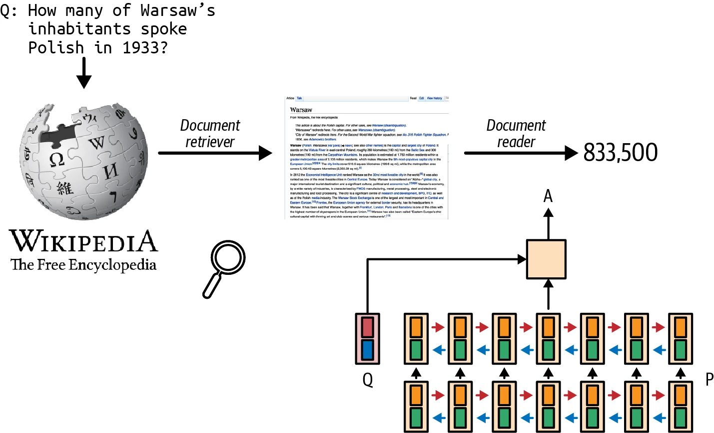
“检索增强生成”一词由论文“Retrieval-Augmented Generation for Knowledge-Intensive NLP Tasks”（Lewis 等，2020）创造。论文把 RAG 作为知识密集型任务的解决方案：当全部可用知识无法直接输入模型时，只检索由检索器判定为与查询最相关的信息，再把这些信息交给模型。Lewis 等人发现，访问相关信息能让模型生成更详尽的回答，同时减少幻觉。
例如查询“Acme 的 fancy-printer-A300 能以每秒 100 页的速度打印吗？”，如果同时给模型 fancy-printer-A300 的规格，它会回答得更好。
可以把 RAG 理解为一种为每条查询构建专属上下文，而不是给所有查询使用同一上下文的技术。这也有助于管理用户数据，因为只有与某位用户有关的查询，才需要加入该用户专属的数据。
基础模型的上下文构建，相当于经典 ML 模型的特征工程：两者目的相同，都是给模型处理输入所需的信息。
基础模型早期，RAG 很快成为最常见的模式之一，主要目的是克服模型上下文限制。很多人认为，只要上下文足够长，RAG 就会消失；作者并不同意。
第一，无论模型上下文多长，总会有应用需要更长的上下文。毕竟可用数据只会随时间增长：人们不断生成、添加新数据，却很少删除数据。上下文长度虽然增长很快，仍赶不上任意应用的数据需求。
第二，模型能处理长上下文，不等于能把它用好，“上下文长度与上下文效率”一节已经讨论过这一点。上下文越长，模型越可能把注意力放错地方；每多一个上下文词元都会增加成本，也可能增加延迟。RAG 只让模型使用每条查询最相关的信息，既减少输入词元，也可能提升模型表现。
扩展上下文长度的工作，正与提高模型上下文使用效率的工作并行推进。如果未来模型提供商把类似检索或注意力的机制直接纳入模型，帮助它挑出上下文中最重要的部分，作者也不会惊讶。
Anthropic 建议：对于 Claude，如果“知识库少于 200,000 个词元（约 500 页材料），可以直接把整个知识库放进交给模型的提示，不需要 RAG 或类似方法”（Anthropic，2024）。如果其他模型开发者也能为自己的模型提供 RAG 与长上下文之间怎样选择的指导，会非常有帮助。
RAG 架构
RAG Architecture
RAG 系统由两个组件构成：检索器从外部记忆源检索信息，生成器则根据检索到的信息生成回答。图 6-2 展示 RAG 系统的高层架构。
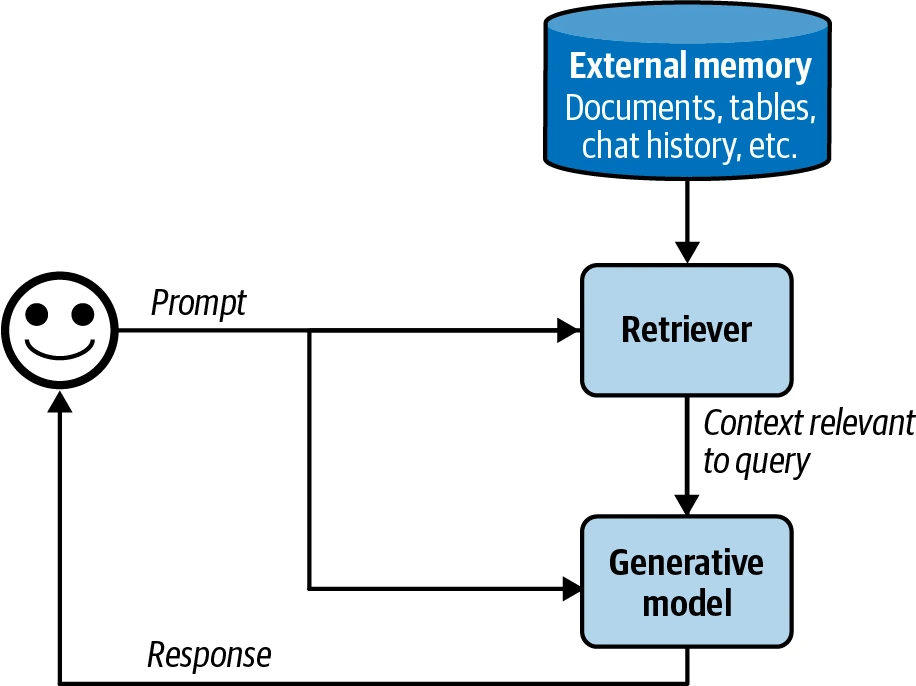
在最初的 RAG 论文中，Lewis 等人把检索器与生成模型一起训练。今天的 RAG 系统往往分别训练两个组件，许多团队直接使用现成检索器和模型搭建系统。不过，对整个 RAG 系统做端到端微调，可以显著改善表现。
RAG 系统能否成功，取决于检索器的质量。检索器有两个主要功能：索引和查询。索引是预处理数据，让它以后能被快速检索；发送一条查询，取回与之相关的数据，就叫查询。怎样建立索引，取决于以后打算怎样检索。
了解主要组件后，来看 RAG 系统怎样工作的例子。为简单起见，假设外部记忆是一个文档数据库，包含公司备忘录、合同和会议记录。一份文档可以只有 10 个词元，也可以有 100 万个；朴素地检索整份文档，会让上下文长度失去控制。
为避免这一点，可以把每份文档拆成更易管理的数据块。本章稍后会讨论分块策略；此处先假定所有文档都已拆成可处理的数据块。对每条查询，目标是检索与之最相关的数据块。通常还需做少量后处理，把检索到的数据块与用户提示拼成最终提示，再将其输入生成模型。
本章用“文档”同时表示完整文档和数据块，因为严格说来，文档的一个块也仍是文档。这样做是为了让本书术语与经典 NLP、信息检索（IR）术语保持一致。
检索算法
Retrieval Algorithms
检索并非 RAG 独有。信息检索已有百年历史，是搜索引擎、推荐系统、日志分析等系统的支柱。为传统检索系统开发的许多算法，也能用于 RAG。信息检索是研究成果丰硕、产业规模庞大的领域，区区几页不可能充分覆盖，因此本节只介绍大体轮廓；更深入的资料见本书 GitHub 仓库。
“检索”通常局限于单个数据库或系统，“搜索”则跨多个系统检索。本章会交替使用这两个词。
检索的核心，是按照文档与给定查询的相关程度给文档排序。不同检索算法的差别在于怎样计算相关性分数。下面从两种常见机制开始：基于词项的检索和基于嵌入的检索。
文献经常把检索算法分为稀疏检索和稠密检索；本书则采用“基于词项”与“基于嵌入”的分类。
稀疏检索器用稀疏向量表示数据，即向量中绝大多数值为 0。基于词项的检索被视为稀疏检索，因为每个词项可以用稀疏 one-hot 向量表示：除了一个位置为 1，其余全为 0。向量长度等于词表长度，值 1 所在位置就是该词项在词表中的索引。
例如字典为 {"food": 0, "banana": 1, "slug": 2}，那么“food”“banana”“slug”的 one-hot 向量分别是 [1, 0, 0]、[0, 1, 0]、[0, 0, 1]。
稠密检索器用稠密向量表示数据，即向量中大多数值不为 0。嵌入通常是稠密向量，所以基于嵌入的检索通常被视为稠密检索。不过也存在稀疏嵌入。例如 SPLADE（Sparse Lexical and Expansion；Formal 等，2021）使用 BERT 生成的嵌入，再通过正则化把大部分嵌入值压到 0；稀疏性使嵌入运算更高效。
按稀疏、稠密划分，会把 SPLADE 与基于词项的算法归为一类，但 SPLADE 的运算方式、优缺点其实更接近稠密嵌入检索。按词项、嵌入划分，就能避免这种误分类。
基于词项的检索
Term-Based Retrieval
给定一条查询，用关键词寻找相关文档是最直接的方法，有人称之为词法检索。例如查询“AI engineering”，就检索所有包含“AI engineering”的文档。但这种做法有两个问题：
- 很多文档都可能包含给定词项，而模型上下文放不下全部文档。一种启发式做法是优先纳入该词项出现次数最多的文档，假设词项在文档中出现越多，文档与它越相关。词项在文档中的出现次数叫词频（term frequency，TF）。
- 提示可能很长，含有许多词项，但重要性不同。例如“Easy-to-follow recipes for Vietnamese food to cook at home”有 easy-to-follow、recipes、for、vietnamese、food、to、cook、at、home 九个词项。我们应该关注 vietnamese、recipes 这样的信息词，而不是 for、at，因此需要找出重要词项。
一种直觉是：包含某个词项的文档越多，这个词项的信息量越低。“for”“at”很可能出现在多数文档里，因此不太有信息。词项重要性与包含它的文档数成反比，这个指标叫逆文档频率（inverse document frequency，IDF）。
计算一个词项的 IDF，要先数出含有它的文档数，再用文档总数除以这个数。如果一共有 10 份文档，其中 5 份包含某词项，该词项的 IDF 就是 10 ÷ 5 = 2。IDF 越高，词项越重要。
TF-IDF 把词频和逆文档频率结合起来。设查询 Q 中的词项为 t1, t2, …, tq；词项 t 在文档 D 中的词频为 f(t, D)；文档总数为 N；包含 t 的文档数为 C(t)，则：
IDF(t) = log(N / C(t))
Score(D, Q) = ∑i=1q IDF(ti) × f(ti, D)
两种常见的词项检索方案是 Elasticsearch 和 BM25。Elasticsearch（Shay Banon，2010）构建在 Lucene 上，使用一种叫倒排索引的数据结构。它是从词项映射到包含该词项文档的字典，使系统能按词项快速取回文档。索引还可以保存词频、文档计数——有多少文档含该词项——等辅助计算 TF-IDF 的信息。表 6-1 是一个倒排索引示例。
| 词项 | 文档计数 | 所有包含该词项的（文档索引，词频） |
|---|---|---|
| banana | 2 | (10, 3), (5, 2) |
| machine | 4 | (1, 5), (10, 1), (38, 9), (42, 5) |
| learning | 3 | (1, 5), (38, 7), (42, 5) |
| … | … | … |
表 6-1 简化的倒排索引示例。
Okapi BM25 是 Best Matching 算法的第 25 代，由 Robertson 等人在 20 世纪 80 年代开发。它的评分函数是 TF-IDF 的修改版。与朴素 TF-IDF 相比，BM25 按文档长度对词频分数进行归一化，因为长文档更容易含有给定词项，也更容易产生较高词频。
BM25 及其变体 BM25+、BM25F 至今仍在业界广泛使用，是评估现代复杂检索算法——例如下一节的嵌入检索——时非常强的基线。
前面略过了词元化，即把查询拆成单独词项。最简单的方法是按单词分割，每个词单独作为词项；但这会把多词词项拆散，丢失原意。例如“hot dog”会被拆成“hot”和“dog”，两者都不再保留原词含义。缓解方法之一，是把最常见的 n-gram 也视为词项；如果二元组“hot dog”很常见，就把它整体作为一个词项。
此外，还可能需要把字符统一转成小写、删除标点、去除停用词——如 the、and、is。词项检索方案通常会自动处理这些工作。NLTK（Natural Language Toolkit）、spaCy、Stanford CoreNLP 等经典 NLP 工具包也提供词元化功能。
第 4 章介绍了怎样根据 n-gram 重叠衡量两段文本的词法相似度。能否按文档与查询的 n-gram 重叠程度检索？可以。这种方法在查询和文档长度相近时效果最好。若文档比查询长得多，文档包含查询 n-gram 的机会就会增加，许多文档都会得到相近的高重叠分数，真正相关与不太相关的文档就很难区分。
基于嵌入的检索
Embedding-Based Retrieval
基于词项的检索在词法层面而不是语义层面计算相关性。第 3 章提到，文本表面形式不一定能表达含义，因此可能返回与实际意图无关的文档。例如查询“transformer architecture”，可能得到电气变压器或电影《Transformers》的文档。基于嵌入的检索器则按文档含义与查询含义的接近程度排序，也叫语义检索。
采用嵌入检索时，索引多了一项功能：把原始数据块转换为嵌入。存储这些嵌入的数据库叫向量数据库。查询分成图 6-3 所示的两步：
- 嵌入模型：使用索引阶段的同一个嵌入模型，把查询转换成嵌入。
- 检索器：按照检索器计算的距离，取回嵌入最接近查询嵌入的 k 个数据块。k 的取值取决于用例、生成模型和查询。
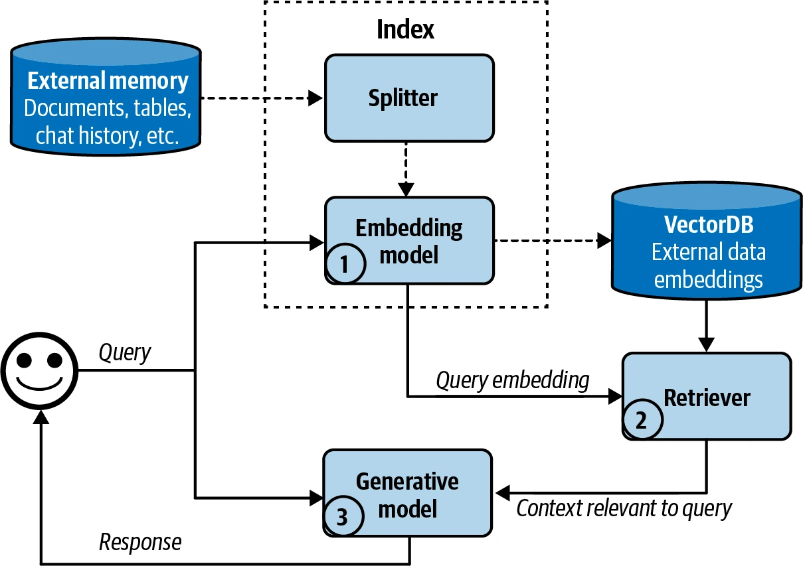
图中流程经过了简化。现实语义检索系统还可能包含其他组件，例如给所有候选重新排序的重排器，以及降低延迟的缓存。
嵌入已在第 3 章讨论：通常它是一个试图保留原始数据重要属性的向量。嵌入模型不好，基于嵌入的检索器也不会有效。
嵌入检索还引入了向量数据库。向量数据库存储向量，但存储只是容易的部分，困难在于向量搜索。给定查询嵌入，向量数据库要找出库中与它接近的向量并返回；向量必须以能让搜索快速、高效的方式建立索引并存储。
与生成式 AI 应用依赖的许多机制一样，向量搜索也不是生成式 AI 独有。凡是使用嵌入的应用——搜索、推荐、数据组织、信息检索、聚类、欺诈检测等——都常用向量搜索。
向量搜索通常被描述为最近邻搜索问题，例如给定查询，找 k 个最近向量。朴素解法是 k 最近邻（k-NN）：
- 使用余弦相似度等指标，计算查询嵌入与数据库中所有向量的相似度；
- 按相似度给所有向量排序；
- 返回相似度最高的 k 个向量。
这种朴素方法能保证结果精确，却计算量大、速度慢，只适合小数据集。
大型数据集通常使用近似最近邻（ANN）算法做向量搜索。由于向量搜索很重要，人们开发了大量算法与库，包括 FAISS（Facebook AI Similarity Search；Johnson 等，2017）、Google ScaNN（Scalable Nearest Neighbors；Sun 等，2020）、Spotify Annoy（Bernhardsson，2013）和 Hnswlib（Hierarchical Navigable Small World；Malkov 与 Yashunin，2016）。
多数应用开发者不会自己实现向量搜索，因此这里仅快速概览不同方法，方便评估方案。总体而言，向量数据库会把向量组织成桶、树或图；不同算法使用不同启发式规则，提高相似向量彼此靠近的概率。还可以对向量量化——降低精度——或稀疏化，因为量化、稀疏向量的计算成本更低。想进一步学习，可参考 Zilliz 的优秀系列文章。
- LSH（locality-sensitive hashing；Indyk 与 Motwani，1999）
- 这是一种强大而通用、并非只适用于向量的算法。它把相似向量哈希到同一个桶中，以牺牲部分精度换取更快的相似度搜索。FAISS 和 Annoy 都实现了 LSH。
- HNSW（Hierarchical Navigable Small World；Malkov 与 Yashunin，2016）
- HNSW 构造多层图，节点代表向量，边连接相似向量；最近邻搜索通过沿图边遍历完成。作者的实现已开源，FAISS 和 Milvus 也有实现。
- Product Quantization（Jégou 等，2011）
- 它把每个向量分解成多个子向量，从而压缩成更简单、维度更低的表示；之后在低维表示上计算距离，速度快得多。乘积量化是 FAISS 的关键组件，几乎所有热门向量搜索库都支持。
- IVF（inverted file index；Sivic 与 Zisserman，2003）
- IVF 用 K-means 聚类把相似向量归入同一簇。根据数据库向量数，通常设置簇数，使每簇平均含 100～10,000 个向量。查询时，IVF 找到最接近查询嵌入的簇中心，这些簇中的向量成为候选邻居。IVF 与乘积量化共同构成 FAISS 的骨干。
- Annoy（Approximate Nearest Neighbors Oh Yeah；Bernhardsson，2013）
- Annoy 是基于树的方法。它构建多棵二叉树，每棵树按随机标准把向量拆成多个簇，例如随机画一条线，并据此分到两个分支。搜索时遍历这些树，收集候选邻居。Spotify 已开源实现。
其他算法还有 Microsoft 的 SPTAG（Space Partition Tree And Graph）和 FLANN（Fast Library for Approximate Nearest Neighbors）。
向量数据库随着 RAG 兴起而成为独立类别，但只要数据库能存储向量，就可以称作向量数据库。许多传统数据库已经或将会扩展对向量存储、向量搜索的支持。
比较检索算法
Comparing Retrieval Algorithms
检索历史悠久，成熟方案众多，所以基于词项和基于嵌入的检索都很容易起步，两者各有优缺点。
在索引和查询阶段，词项检索通常都远快于嵌入检索。提取词项比生成嵌入快，从词项映射到包含它的文档，也可能比最近邻搜索需要更少计算。
词项检索开箱即用的表现也很好，Elasticsearch、BM25 已成功支撑许多搜索、检索应用。但简单也意味着可调整、可用来改进表现的组件较少。
嵌入检索则可以随时间大幅改进，最终胜过词项检索。嵌入模型和检索器既可分别微调，也可联合微调，甚至可与生成模型一同微调。不过，把数据转换成嵌入可能掩盖 EADDRNOTAVAIL (99) 等具体错误码或产品名，使它们以后更难搜索。后文会介绍怎样把嵌入检索与词项检索结合，弥补这一限制。
检索器质量可以根据取回数据的质量评估。RAG 评测框架常用两个指标：上下文精确率和上下文召回率，简称精确率、召回率；上下文精确率也叫上下文相关性。
- 上下文精确率（Context precision）
- 所有取回文档中，与查询相关的占多少？
- 上下文召回率（Context recall）
- 所有与查询相关的文档中，有多少被取回？
计算这些指标，需要策划一个评测集，包含测试查询列表和一组文档。对每条测试查询，给每份测试文档标注“相关”或“不相关”；标注可由人类或 AI 评判者完成。之后便可在评测集上计算检索器的精确率和召回率。
生产环境中，有些 RAG 框架只支持上下文精确率，不支持上下文召回率。要算某条查询的召回率，必须标注数据库中所有文档与它的相关性；精确率简单得多，只需比较已取回文档与查询，AI 评判者就能完成。
如果还关心取回文档的排序——例如更相关的文档应该排在前面——可以使用 NDCG（normalized discounted cumulative gain）、MAP（Mean Average Precision）、MRR（Mean Reciprocal Rank）等指标。
对语义检索，还需评估嵌入质量。第 3 章介绍过，嵌入可以独立评估：相似文档的嵌入越接近，嵌入越好；也可以按嵌入在具体任务中的效果评估。MTEB 基准（Muennighoff 等，2023）覆盖检索、分类、聚类等多种任务。
检索器也应放在完整 RAG 系统中评估。归根结底，能帮助系统生成高质量答案的检索器才是好检索器。第 3、4 章讨论生成模型输出评测。
语义检索的表现潜力是否值得追求，取决于你怎样权衡成本与延迟，尤其是查询阶段。RAG 的很多延迟来自输出生成，长输出尤其如此，所以生成查询嵌入、执行向量搜索增加的延迟，在总延迟中可能很小；即便如此，它仍会影响用户体验。
成本也是问题。生成嵌入需要花钱，数据频繁变化、必须频繁重新生成嵌入时尤其如此——想象每天给 1 亿份文档重新生成嵌入！向量存储和查询也可能很贵，取决于使用的向量数据库。公司在向量数据库上的支出达到模型 API 支出的五分之一、甚至一半，并不少见。
| 维度 | 基于词项的检索 | 基于嵌入的检索 |
|---|---|---|
| 查询速度 | 远快于嵌入检索 | 查询嵌入生成和向量搜索可能很慢 |
| 表现 | 开箱即用通常很强，但很难继续改善；词项歧义可能取回错误文档 | 经过微调可以胜过词项检索；聚焦语义而非词项，可以使用更自然的查询 |
| 成本 | 远低于嵌入检索 | 嵌入、向量存储和向量搜索方案可能很昂贵 |
表 6-2 从速度、表现和成本比较词项检索与语义检索。
检索系统可以在索引和查询之间做取舍。索引越详细，检索越准确，但建立索引越慢、越占内存。想象建立潜在客户索引：加入姓名、公司、邮箱、电话、兴趣等更多细节，会更容易找到相关人，却也需要更长构建时间和更多存储。
HNSW 这样的详细索引一般准确率高、查询快，却需要大量构建时间和内存。LSH 这样的简单索引构建更快、内存占用更低，但查询更慢、准确率也低。
ANN-Benchmarks 网站在多个数据集上用四个主要指标比较 ANN 算法，同时体现索引与查询的取舍：
- 召回率
- 算法找到的真实最近邻比例。
- 每秒查询数（QPS）
- 算法每秒能处理的查询数量，对高流量应用至关重要。
- 构建时间
- 建立索引所需时间；如果数据经常变化、需要频繁更新索引，这个指标尤其重要。
- 索引大小
- 算法生成的索引体积，是评估可扩展性和存储需求的关键。
此外，BEIR（Benchmarking IR；Thakur 等，2021）是检索评测工具，支持在 14 个常见检索基准上评测检索系统。
总结来说，RAG 系统既要逐组件评估，也要端到端评估：
- 评估检索质量；
- 评估最终 RAG 输出；
- 若采用嵌入检索，评估嵌入。
组合检索算法
Combining Retrieval Algorithms
不同检索算法优势各异，生产检索系统通常会组合多种方法。把词项检索与嵌入检索结合，叫作混合搜索（hybrid search）。
多种算法可以串行使用。先由便宜但不够精确的检索器——如词项系统——取回候选，再由更精确但更昂贵的机制——如 k 最近邻——从候选中找出最佳结果。第二步也叫重排。
例如查询“transformer”，先取回所有含 transformer 的文档，不管它们讨论变压器、神经网络架构还是电影；再用向量搜索找出真正与这次 transformer 查询相关的文档。又如查询“谁负责对 X 的最多销售额？”，可以先用关键词 X 取回所有与 X 相关的文档，再用向量搜索取回与“谁负责最多销售额”相关的上下文。
多种算法也可以作为集成并行运行。检索器会按相关性给文档排序；可以让多个检索器同时取候选，再合并不同排序，得到最终排序。
合并排序的一种算法是倒数排名融合（reciprocal rank fusion，RRF）（Cormack 等，2009）。它根据文档在各检索器中的排名赋分：直观地说，第一名得 1/1 = 1，第二名得 1/2 = 0.5；排名越高，分数越高。
文档最终分数，是它对所有检索器所得分数之和。一份文档在某检索器排第一、另一检索器排第二，总分就是 1 + 0.5 = 1.5。这是简化示例，实际公式为：
Score(D) = ∑i=1n 1 / (k + ri(D))
- n 是排名列表数量，每份列表由一个检索器生成；
- ri(D) 是检索器 i 给文档 D 的排名；
- k 是避免除零、并控制低排名文档影响的常数，典型值为 60。
检索优化
Retrieval Optimization
根据任务不同，某些策略能提高取回相关文档的概率。这里讨论四种：分块策略、重排、查询重写和上下文化检索。
分块策略
Chunking Strategy
数据怎样建立索引，取决于以后打算怎样检索。上一节介绍不同检索算法及其索引策略时，假定文档已经拆成可管理的数据块；这里具体讨论分块。分块策略会显著影响检索系统表现，是一项重要设计选择。
最简单的策略，是按某种单位把文档切成等长块。常见单位有字符、单词、句子和段落。例如每块 2,048 个字符或 512 个单词，也可以让每块包含固定句数——如 20 句——或固定段落数——甚至每段单独一块。
还可以从大到小递归分割，直到每块都不超过最大块大小。例如先按章节切分，某节过长就拆成段落，段落仍太长再拆成句子。这能减少相关文本被任意切断的机会。
特殊文档可以采用有创意的策略。例如有人为不同编程语言开发了专用分割器；问答文档可以按“问题—答案”对切分，每对作为一块；中文文本需要的切分方式也可能不同于英文。
文档切块时若完全不重叠，边界可能正好截断重要上下文，丢失关键信息。考虑“I left my wife a note”（我给妻子留了一张便条），若拆成“I left my wife”和“a note”，两个块都无法表达原句的关键信息。重叠能保证重要边界信息至少完整出现在一个块里。若块大小为 2,048 个字符，或许可以设置 20 个字符的重叠。
块大小不应超过生成模型的最大上下文长度；采用嵌入检索时，也不应超过嵌入模型的上下文限制。
还可以把生成模型的 tokenizer 所定义的词元作为分块单位。假设生成模型是 Llama 3，就先用 Llama 3 tokenizer 对文档词元化，再以词元为边界切块。按词元切分更方便下游模型处理，但若换成 tokenizer 不同的生成模型，就必须重新索引数据。
无论选哪种策略，块大小都很重要。较小的数据块能带来更多样的信息：块越小，模型上下文里能容纳的块越多；块大小减半，就能放入两倍的块。更多块为模型提供更广的信息范围，可能帮助它生成更好的答案。
但小块也会丢失重要信息。想象一份文档从头到尾都包含主题 X 的重要信息，但只有前半段明确提到 X；若把它拆成两块，后半段可能无法被取回，模型也就用不到其中的信息。
小块还会增加计算开销，嵌入检索尤其如此。块大小减半，意味着要索引两倍的块，生成、存储两倍的嵌入向量；向量搜索空间也扩大一倍，查询速度可能下降。
不存在普适的最佳块大小或重叠大小，必须通过实验找出适合自己系统的值。
重排
Reranking
检索器生成初始文档排名后，可以进一步重排以提高准确性。当你必须减少取回文档数量——为了塞进模型上下文，或减少输入词元——重排尤其有用。
“组合检索算法”介绍过一种常见模式：先由便宜但不够精确的检索器取候选，再用更精确、更昂贵的机制重排。
还可以按时间重排，提高新数据权重。这适合新闻聚合、与邮件聊天——能回答邮件相关问题的聊天机器人——或股市分析等时间敏感应用。
上下文重排与传统搜索重排不同，项目的精确位置没那么关键。搜索中，排第一还是第五至关重要；上下文中文档顺序仍会影响模型处理效果——“上下文长度与上下文效率”提到，模型可能更理解开头和结尾的文档——但只要文档已经被纳入，顺序影响远小于搜索排名。
查询重写
Query Rewriting
查询重写也叫查询改写、查询归一化，有时也叫查询扩展。考虑下面的对话：
用户：John Doe 上一次从我们这里买东西是什么时候？
AI：John 上一次购买是两周前，2030 年 1 月 3 日，买了一顶 Fruity Fedora 帽子。
用户：Emily Doe 呢？
最后一个问题脱离上下文就含义不明。原样拿它检索，很可能得到无关结果；需要重写成能独立理解、反映用户真实意图的查询：“Emily Doe 上一次从我们这里买东西是什么时候？”
查询重写并非 RAG 独有。传统搜索引擎通常用启发式规则重写；AI 应用也可以让另一个 AI 模型重写，提示类似：“给定以下对话，请重写最后一条用户输入，使其反映用户真正的问题。”图 6-4 展示 ChatGPT 使用该提示重写查询。
查询重写可能很复杂，尤其需要身份解析或纳入其他知识时。例如用户问“那他的妻子呢？”，必须先查询数据库，找出“他的妻子”是谁。如果没有这项信息，重写模型应该承认查询无法解决，而不是编造一个名字，最终导致错误答案。
上下文化检索
Contextual Retrieval
上下文化检索的思路，是给每个数据块补充相关上下文，使相关块更容易被取回。简单方法是加入标签、关键词等元数据。电商商品可以加入描述和评论；图像、视频可以通过标题或说明文字查询。
元数据还可以包含从数据块自动抽取的实体。若文档含有 EADDRNOTAVAIL (99) 这样的具体错误码，把它加入元数据后，即使文档已经转成嵌入，系统仍能通过关键词取回它。
还可以为每个块补充它能回答的问题。客服文章可以附加相关问题，例如重置密码文章可以加入“怎样重置密码？”“我忘记密码了”“我无法登录”，甚至“救命，我找不到账户了”等查询。
一份文档拆成多个块以后，有些块可能缺乏让检索器理解其主题的必要上下文。为避免这种情况，可以给每块补充原文档的标题、摘要等上下文。
Anthropic 使用 AI 模型生成一段通常为 50～100 词元的短上下文，解释数据块以及它与原始文档的关系。使用的提示如下（Anthropic，2024）：
<document>
{{WHOLE_DOCUMENT}}
</document>
下面是我们希望放回整篇文档语境中的数据块：
<chunk>
{{CHUNK_CONTENT}}
</chunk>
为了改善这个数据块的搜索检索效果，
请给出一段简短、精炼的上下文，把它放回整篇文档中。
只回答这段精炼上下文，不要输出其他内容。为每块生成的上下文会添加到块的开头，增强后的数据块再由检索算法建立索引。图 6-5 展示 Anthropic 的流程。
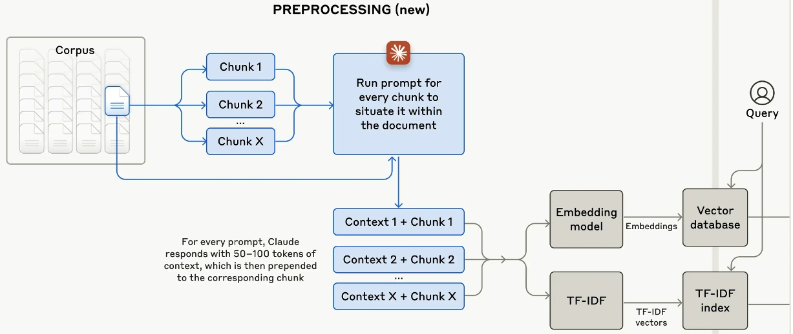
评估检索方案时，应重点考虑：
- 支持哪些检索机制？是否支持混合搜索？
- 若为向量数据库，支持哪些嵌入模型和向量搜索算法？
- 数据存储和查询流量方面能扩展到多大？是否适合你的流量模式？
- 索引数据需要多久？一次能批量处理——新增或删除——多少数据？
- 不同检索算法的查询延迟是多少？
- 若为托管方案，定价结构是什么？按文档／向量量收费，还是按查询量收费？
这份清单尚未包含企业方案通常要求的访问控制、合规性、数据平面与控制平面分离等功能。
文本之外的 RAG
RAG Beyond Texts
前一节讨论外部数据源是文本文档的 RAG 系统；外部数据源也可以是多模态数据和表格数据。
多模态 RAG
Multimodal RAG
如果生成器是多模态的，上下文不仅能补充外部文本，也能补充图像、视频、音频等。为保持行文简洁，这里用图像举例，但可以换成任何其他模态。
给定查询，检索器同时取回相关文本和图像。例如“What’s the color of the house in the Pixar movie Up?”（Pixar 电影《飞屋环游记》里的房子是什么颜色？），检索器可以取回电影中房子的图片，帮助模型回答，如图 6-6。
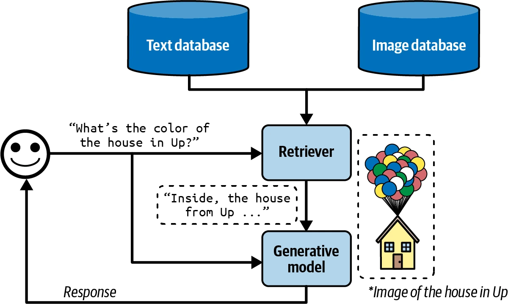
图像若带有标题、标签、说明文字等元数据，可以通过元数据检索。例如当图片说明与查询相关时，就取回该图片。
如果想按图像内容检索，就需要比较图像和查询。查询是文本时，需要一个能同时为图像、文本生成嵌入的多模态嵌入模型。假设使用 CLIP（Radford 等，2021），检索器流程如下：
- 用 CLIP 为全部文本、图像生成嵌入，存入向量数据库；
- 给定查询，生成它的 CLIP 嵌入；
- 在向量数据库中查询嵌入接近查询嵌入的全部图像和文本。
表格数据 RAG
RAG with Tabular Data
多数应用不仅处理文本、图像等非结构化数据，也处理表格数据。很多查询必须借助数据表才能回答，而用表格数据增强上下文的流程，与经典 RAG 流程大不相同。
假设你在一家名为 Kitty Vogue、专营猫咪时尚的电商网站工作。商店有一张名为 Sales 的订单表，如表 6-3。
| 订单 ID | 时间戳 | 商品 ID | 商品 | 单价 |
|---|---|---|---|---|
| 1 | … | 2044 | Meow Mix Seasoning | 10.99 |
| 2 | … | 3492 | Purr & Shake | 25 |
| 3 | … | 2045 | Fruity Fedora | 18 |
| … | … | … | … | … |
表 6-3 虚构电商网站 Kitty Vogue 的订单表 Sales 示例。
要回答“过去 7 天卖出了多少件 Fruity Fedora？”，系统必须查询表中所有 Fruity Fedora 订单，并汇总所有订单的件数。假设可以用 SQL 查询该表，查询可能如下：
SELECT SUM(units) AS total_units_sold
FROM Sales
WHERE product_name = 'Fruity Fedora'
AND timestamp >= DATE_SUB(CURDATE(), INTERVAL 7 DAY);工作流如图 6-7，系统必须能够生成并执行 SQL：
- Text-to-SQL：根据用户查询和给定表结构，确定需要什么 SQL。第 2 章提到，text-to-SQL 是语义解析的一种。
- SQL 执行：执行 SQL 查询。
- 生成：根据 SQL 结果和原始用户查询生成回答。
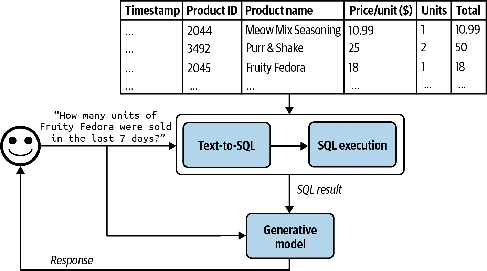
Text-to-SQL 阶段，如果可用表很多，结构无法全部放入模型上下文，可能需要增加一个中间步骤，预测每条查询应使用哪些表。Text-to-SQL 可以由生成最终回答的同一个生成器完成，也可以使用专用 text-to-SQL 模型。
本节介绍了检索器、SQL 执行器等工具怎样让模型处理更多查询、生成更高质量回答。那么，给模型更多工具，能否进一步增强能力？工具使用正是智能体模式的核心特征，下一节开始讨论。
智能体
Agents
很多人把智能体视为 AI 的终极目标。Stuart Russell 与 Peter Norvig 的经典著作《Artificial Intelligence: A Modern Approach》（Prentice Hall，1995）把人工智能研究领域定义为“对理性智能体的研究与设计”。
基础模型前所未有的能力，为过去无法想象的智能体应用打开了大门。现在终于可能开发自主、智能的智能体，让它们担任助手、同事和教练。它们可以帮助我们创建网站、收集数据、规划旅行、做市场调研、管理客户账户、自动录入数据、准备面试、面试候选人、谈判交易等。可能性仿佛无穷无尽，潜在经济价值也极其巨大。
AI 智能体还是新兴领域，尚无公认理论框架来定义、开发、评估智能体。本节会尽力依据现有文献搭建一个框架，但它必将随领域发展而演进。与全书其他部分相比，本节更具实验性。
本节先概览智能体，随后讨论决定其能力的两个方面：工具和规划。智能体拥有新的运作方式，也产生了新的失败模式；最后会讨论怎样评估智能体、捕捉这些失败。
智能体虽然新颖，却建立在本书已经介绍过的概念之上，包括自我批判、思维链和结构化输出。
智能体概览
Agent Overview
“智能体”一词用在许多不同工程语境中，包括软件智能体、智能智能体、用户代理、对话智能体、强化学习智能体等。究竟什么是智能体？
智能体是任何能感知环境、并对环境采取行动的事物。因此，智能体由它运行的环境和能够执行的动作集合来描述。
智能体能在哪种环境运行，由用例定义。为 Minecraft、围棋、Dota 等游戏开发智能体，游戏就是环境；让智能体从互联网抓取文档，互联网就是环境；烹饪机器人以厨房为环境；自动驾驶汽车智能体的环境则是道路系统及周边区域。
AI 智能体能执行哪些动作，由它能访问的工具扩展。我们每天交互的许多生成式 AI 应用其实都是能用工具的智能体，只不过工具比较简单。ChatGPT 是智能体，可以搜索网页、执行 Python 代码、生成图像。RAG 系统也是智能体，文本检索器、图像检索器、SQL 执行器就是它的工具。
智能体环境与工具集合高度相依。环境决定它潜在能使用什么工具：如果环境是国际象棋，可能的动作就只有合法棋步。反过来，工具清单也会限制环境：一个机器人若唯一动作是游泳，就只能待在水环境里。
图 6-8 展示 SWE-agent（Yang 等，2024），它建立在 GPT-4 之上，环境是带终端和文件系统的计算机，动作包括浏览代码库、搜索文件、查看文件和编辑行。
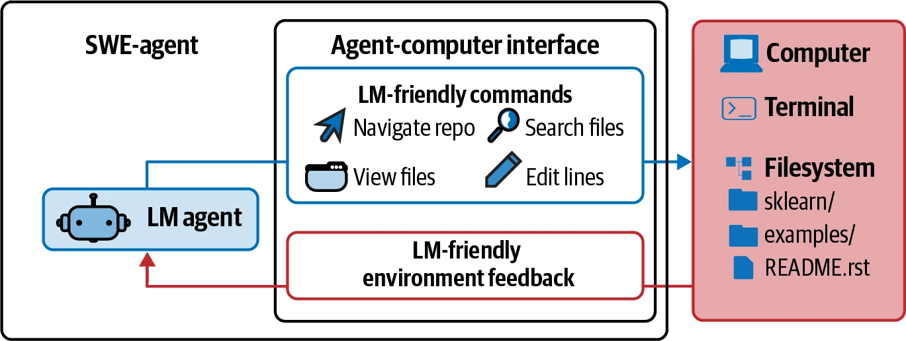
AI 智能体的目标，是完成用户通常通过输入交付的任务。AI 是智能体的大脑：处理收到的信息——包括任务和环境反馈——规划达成任务的一系列动作，并判断任务是否已经完成。
回到 Kitty Vogue 表格 RAG 示例。它是一个只有三种动作的简单智能体：生成回答、生成 SQL 查询、执行 SQL 查询。给定“预测未来三个月 Fruity Fedora 的销售收入”，智能体可能执行：
- 推理怎样完成任务。它可能认为，要预测未来销售，先需要过去五年的销售数字。智能体的推理会作为中间回答呈现。
- 调用 SQL 查询生成，生成取得过去五年销售数字的查询。
- 调用 SQL 查询执行，运行该查询。
- 推理工具输出以及它对销售预测的帮助。可能发现数字不足以可靠预测，例如存在缺失值，于是决定还需要过去营销活动的信息。
- 调用 SQL 查询生成，为过去营销活动生成查询。
- 调用 SQL 查询执行。
- 推理新信息已经足够预测未来销售，然后生成预测。
- 推理任务已成功完成。
与非智能体用例相比，智能体通常需要更强模型，原因有二：
- 错误复合：智能体经常需要多步才能完成任务，步骤越多，整体准确率越低。若每步准确率为 95%，10 步后整体准确率降至 60%，100 步后只剩 0.6%。
- 风险更高：有了工具，智能体能执行影响更大的任务，但失败的后果也更严重。
多步骤任务可能耗时又花钱；但若智能体能够自主运行，就能节省大量人类时间，成本也可能值得。
给定环境，智能体能否成功，取决于它可访问的工具清单，以及 AI 规划器的强弱。下面先看模型可以使用哪些工具。
工具
Tools
系统不必访问外部工具也能算智能体，但没有外部工具，能力会很有限。模型自身通常只能执行一种动作，例如 LLM 生成文本、图像生成器生成图像；外部工具能让智能体强大得多。
工具既帮助智能体感知环境，也帮助它作用于环境。让智能体感知环境的动作是只读动作，让它改变环境的动作则是写入动作。
本节概览外部工具，“规划”一节再讨论怎样使用工具。
智能体能访问的工具集合叫工具清单（tool inventory）。工具清单决定智能体能做什么，因此必须认真考虑给它哪些工具、给多少工具。工具越多，能力越多；但工具越多，也越难充分理解并正确使用。“工具选择”会说明，需要通过实验找到合适的工具组合。
根据智能体环境，可以有很多种工具。下面分三类介绍：知识增强——也就是上下文构建——能力扩展，以及让智能体对环境采取行动的工具。
知识增强
Knowledge Augmentation
到这里，本书应该已经让你相信：相关上下文对模型回答质量至关重要。工具中的一个重要类别，就是帮助智能体扩充知识。前面已经介绍文本检索器、图像检索器和 SQL 执行器；其他可能工具包括内部人员搜索、返回不同商品状态的库存 API、Slack 检索、邮件阅读器等。
许多工具用组织私有流程和信息增强模型，但也能让模型访问公开信息，尤其是互联网。
网页浏览是 ChatGPT 等聊天机器人最早、也最受期待的能力之一，它能防止模型过时。所谓模型过时，是训练数据已经陈旧。若训练数据截止上周，除非上下文提供本周信息，否则模型无法回答需要本周信息的问题。没有网页浏览，它就无法告诉你天气、新闻、即将发生的活动、股价、航班状态等。
作者把“网页浏览”作为总称，覆盖所有访问互联网的工具，包括浏览器，以及搜索 API、新闻 API、GitHub API，或 X、LinkedIn、Reddit 等社交媒体 API。
网页浏览能让智能体引用最新信息，生成更好回答、减少幻觉，却也可能把互联网的污水坑打开给它。务必谨慎选择互联网 API。
能力扩展
Capability Extension
第二类工具用于弥补 AI 模型的固有限制，是快速提升表现的简单办法。例如 AI 模型出了名地不擅长数学，问 199,999 除以 292 很可能答错；但只要能使用计算器，这个计算轻而易举。与其花大量资源把模型训练得擅长算术，不如直接给它工具。
其他简单而有效的工具包括日历、时区转换器、单位换算器——如磅转千克——以及模型不擅长语言的翻译器。
更复杂也更强大的工具是代码解释器。与其训练模型理解代码，不如让它执行代码、返回结果或分析失败。这样智能体就能充当编程助手、数据分析师，甚至能写代码做实验并报告结果的研究助手。不过自动执行代码会带来代码注入攻击风险，“防御性提示工程”已经讨论过。必须采取适当安全措施，保护你和用户。
外部工具还能让纯文本或纯图像模型变成多模态。例如只能生成文本的模型可以调用 text-to-image 模型，于是同时生成文字和图像。收到文本请求后，AI 规划器决定调用文本生成、图像生成还是两者都调用。ChatGPT 就是这样同时生成文字和图像：它用 DALL-E 作为图像生成器。
智能体还可以用代码解释器生成图表，用 LaTeX 编译器渲染数学公式，用浏览器把 HTML 代码渲染成网页。同样，只能处理文本输入的模型，可以用图像说明工具处理图片、用转录工具处理音频、用 OCR（光学字符识别）读取 PDF。
相比只用提示甚至微调，工具使用能显著提升模型表现。Chameleon（Lu 等，2023）表明，GPT-4 智能体增加 13 种工具后，在多个基准上胜过单独 GPT-4；工具包括知识检索、查询生成器、图像说明器、文本检测器和 Bing 搜索。
在科学问答基准 ScienceQA 上，Chameleon 比已发表最佳 few-shot 结果提高 11.37%；在表格数学应用题基准 TabMWP（Lu 等，2022）上，准确率提高 17%。
写入动作
Write Actions
到目前为止讨论的是让模型读取数据源的只读动作；工具也可以执行写入动作，改变数据源。SQL 执行器既能取回数据表——读——也能修改或删除表——写；邮件 API 既能读邮件，也能回复；银行 API 既能查询余额，也能发起转账。
写入动作让系统能完成更多工作，例如自动化整个客户触达流程：研究潜在客户、寻找联系方式、起草邮件、发送首封邮件、读取回复、跟进、提取订单，再用新订单更新数据库。
但让 AI 自动改变我们的生活也令人恐惧。就像不该给实习生删除生产数据库的权限，也不该让不可靠 AI 发起银行转账。对系统能力和安全措施的信任至关重要；必须确保系统能抵御恶意行为者操纵它执行有害动作。
作者谈到自主 AI 智能体时，总有人提自动驾驶汽车：“如果有人黑进汽车绑架你怎么办？”自动驾驶因物理性而格外直观，但 AI 系统即使没有实体，也能造成伤害：操纵股市、窃取版权、侵犯隐私、强化偏见、传播错误信息和宣传等，“防御性提示工程”已经讨论过这些风险。
这些担忧都合理，任何想利用 AI 的组织都必须认真对待安全。但这不等于 AI 系统永远不该获得在现实世界行动的能力。既然人们能信任机器把自己送入太空，希望未来安全措施也足以让我们信任自主 AI 系统。况且人类也会失败；作者个人宁愿乘坐自动驾驶汽车，也不愿让一个普通陌生人开车载自己。
正确工具能极大提高人类生产率——你能想象不用 Excel 做生意，或不用起重机盖摩天大楼吗？——工具同样让模型能完成更多任务。许多模型提供商已经支持工具使用，通常称作函数调用（function calling）。未来，大多数模型普遍支持调用广泛工具，应该会成为常态。
规划
Planning
基础模型智能体的核心，是负责解决任务的模型。任务由目标和约束定义。例如“用 5,000 美元预算安排一次从旧金山到印度的两周旅行”，目标是两周旅行，约束是预算。
复杂任务需要规划。规划过程输出一份计划，即列出完成任务所需步骤的路线图。有效规划通常要求模型理解任务、考虑不同达成方式，再选择最有希望的一种。
只要参加过规划会议，你就知道规划很难。它是一个受到深入研究的重要计算问题，需要好几卷书才能讲完；这里仅触及表面。
规划概览
Planning Overview
给定任务，有许多拆解方式，但不是每一种都能成功；在正确方案中，一些也比另一些高效。考虑查询：“有多少没有营收的公司至少融资了 10 亿美元？”举例来说有两种方法：
- 找出所有没有营收的公司，再按融资额筛选；
- 找出所有至少融资 10 亿美元的公司，再按营收筛选。
第二种更高效，因为没有营收的公司远多于融资达到 10 亿美元的公司。只给这两个选项，聪明的智能体应该选第 2 种。
可以在同一提示中把规划与执行耦合起来：给模型提示，让它一步一步思考——例如思维链——再在一个提示内执行全部步骤。但如果模型提出一个根本不能完成目标的 1,000 步计划呢？没有监督，智能体可能执行数小时，在 API 调用上浪费时间、金钱，最后你才发现毫无进展。
为避免无效执行，应把规划与执行解耦。先让智能体生成计划，验证通过后再执行。计划可用启发式规则验证：最简单的规则是淘汰包含无效动作的计划；若计划要求 Google 搜索，但智能体没有 Google Search，就无效。另一条规则可以淘汰超过 X 步的所有计划。也可以用 AI 评判者验证，让模型判断计划是否合理、怎样改进。
计划不好，就让规划器重新生成；计划好，就执行。若计划由外部工具构成，便调用函数。执行输出随后还需再次评估。生成的计划不必覆盖完整任务，也可以只是一个子任务的小计划。完整过程如图 6-9。
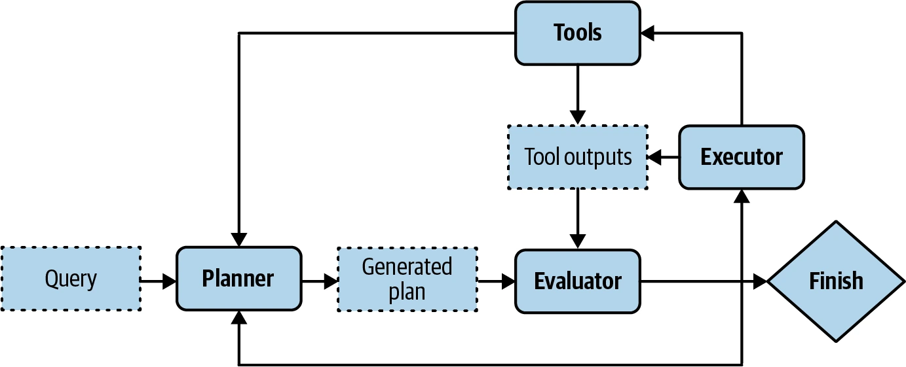
系统现在有三个组件：生成计划、验证计划、执行计划。如果每个组件都算智能体，这就是一个多智能体系统。
为加快流程，可以并行生成多份计划，而不是串行生成，再让评估器选择最有希望的一份。这又是一项延迟／成本取舍，因为同时生成多个计划会增加成本。
规划需要理解任务背后的意图：用户发这条查询究竟想做什么？智能体规划常借助意图分类器。“把复杂任务拆成简单子任务”提到，意图分类既可用另一个提示，也可用专门训练的分类模型。意图分类机制可视为多智能体系统中的另一个智能体。
知道意图能帮助智能体选工具。例如客服查询若与账单有关，可能要调用工具取得用户近期付款；若询问怎样重置密码，则可能需要文档检索。
有些查询可能超出智能体范围。意图分类器应该能把请求标成 IRRELEVANT（不相关），让智能体礼貌拒绝，而不是浪费 FLOPs 为不可能的任务想方案。
到目前为止，我们假定智能体自动完成生成、验证、执行计划三个阶段。现实中，任何阶段都能有人类参与，帮助流程并降低风险。人类专家可以提供计划、验证计划，或执行其中一部分。
例如面对智能体难以生成完整计划的复杂任务，专家可以提供一份高层计划，再由智能体展开。若计划涉及更新数据库、合并代码等危险操作，系统可以在执行前要求人类明确批准，或直接让人类执行。为此，必须为每种动作清楚定义智能体可以自动化到什么程度。
总结来说，解决任务通常包含下面过程。反思并非智能体必需，却能显著提升表现：
- 生成计划：提出完成任务的计划。计划是由可管理动作构成的序列，所以也叫任务分解。
- 反思与纠错：评估计划；若计划不好，重新生成。
- 执行：执行计划中的动作，通常涉及调用具体函数。
- 反思与纠错：收到动作结果后评估结果，判断目标是否达成，发现并纠正错误；若目标尚未完成，生成新计划。
本书已经见过计划生成和反思技术。让模型“一步一步思考”，就是让它分解任务；让模型“验证答案是否正确”，就是要求它反思。
以基础模型作为规划器
Foundation Models as Planners
一个开放问题是基础模型究竟多会规划。许多研究者认为基础模型——至少建立在自回归语言模型上的基础模型——不能规划。Meta 首席 AI 科学家 Yann LeCun 直截了当地说，自回归 LLM 无法规划（2023）。Kambhampati（2023）在“Can LLMs Really Reason and Plan?”中主张，LLM 很擅长提取知识，却不擅长规划。
Kambhampati 认为，声称 LLM 有规划能力的论文，把 LLM 提取出来的一般规划知识和可执行计划混为一谈：“LLM 产出的计划在普通用户看来也许合理，执行时却会产生交互问题和错误。”
虽然大量轶事证据表明 LLM 是糟糕的规划器，但原因尚不清楚：也许我们还不知道怎样正确使用 LLM，也许 LLM 从根本上就无法规划。
规划本质上是搜索问题：在通往目标的不同路径中搜索，预测每条路径的结果——奖励——再选择结果最有希望的一条。有时还可能发现根本不存在能达到目标的路径。
搜索经常需要回溯。假设某一步有 A、B 两种动作，执行 A 后进入一个没有希望的状态，就要回到上一个状态改选 B。
有人认为，自回归模型只能向前生成动作，无法回溯生成替代动作，因此不能规划。但这不一定成立。执行包含动作 A 的路径后，若模型判定它不合理，可以改用 B 重写路径，实际上就是回溯；模型也可以从头再来，选择另一条路径。
LLM 不擅长规划，也可能只是因为没有得到规划所需工具。规划不仅要知道有哪些动作，还要知道每个动作的潜在结果。比如想步行上山，可能动作有右转、左转、掉头、直行；但如果右转会跌下悬崖，就不该考虑。用技术术语说，动作会把你从一个状态带到另一个状态，必须知道结果状态，才能决定是否执行。
因此，只提示模型生成动作序列——流行思维链方法就是这样——并不足够。论文“Reasoning with Language Model is Planning with World Model”（Hao 等，2023）认为，LLM 包含大量世界信息，能够预测每个动作的结果，并把结果预测纳入规划，生成连贯计划。
即使 AI 自身无法规划，仍可以成为规划器的一部分。也许能给 LLM 增加搜索工具和状态追踪系统，帮助它规划。
智能体是强化学习的核心概念。Wikipedia 把 RL 定义为这样一个领域：“研究智能体在动态环境中应怎样采取行动，以最大化累积奖励。”
RL 智能体和 FM 智能体在很多方面相似，都由环境和可能动作描述；主要差别在规划器怎样工作。RL 智能体的规划器由 RL 算法训练，可能需要大量时间和资源。FM 智能体则由模型充当规划器，可以用提示或微调提升规划能力，通常需要更少时间与资源。
不过，没有任何东西阻止 FM 智能体加入 RL 算法来改善表现。作者猜测，长远来看 FM 智能体与 RL 智能体会融合。
计划生成
Plan Generation
把模型变成计划生成器，最简单的方法是提示工程。假设要创建一个帮助客户了解 Kitty Vogue 商品的智能体，并给它三种外部工具：按价格检索商品、检索畅销商品、检索商品信息。下面是计划生成提示的示例，仅用于说明；生产提示通常更复杂：
系统提示
提出一个解决任务的计划。你可以使用 5 种动作：
get_today_date()
fetch_top_products(start_date, end_date, num_products)
fetch_product_info(product_name)
generate_query(task_history, tool_output)
generate_response(query)
计划必须是由有效动作构成的序列。
示例
任务："Tell me about Fruity Fedora"
计划：[fetch_product_info, generate_query, generate_response]
任务："What was the best selling product last week?"
计划：[fetch_top_products, generate_query, generate_response]
任务：{USER INPUT}
计划：这个例子有两点需要注意：
- 这里用函数列表表示计划，参数由智能体推断；这只是组织智能体控制流的众多方式之一。
generate_query接收当前任务历史和最近工具输出，生成交给回答生成器的查询。每一步工具输出都会加入任务历史。
用户输入“What’s the price of the best-selling product last week”（上周最畅销商品的价格是多少），生成计划可能是：
get_time()fetch_top_products()fetch_product_info()generate_query()generate_response()
那每个函数需要的参数呢？准确参数很难事先预测，因为它们经常从前一个工具输出中提取。如果第一步 get_time() 输出“2030-09-13”，智能体可以推断下一步应这样调用：
retrieve_top_products(
start_date="2030-09-07",
end_date="2030-09-13",
num_products=1
)经常没有足够信息确定函数参数。例如用户问“畅销商品的平均价格是多少？”，下面问题都不清楚：
- 用户想看多少件畅销商品？
- 用户想看上周、上月还是有史以来的畅销商品？
这意味着模型经常必须猜测，而猜测可能出错。
动作序列和参数都由 AI 模型生成，都会产生幻觉。幻觉可能让模型调用不存在的函数，或调用真实函数却使用错误参数。一般用于改善模型表现的技术，也能改善规划能力。
让智能体更善于规划的方法包括：
- 编写更好的系统提示，加入更多示例；
- 更清楚地描述工具及参数，帮助模型理解；
- 重写函数使其更简单，例如把一个复杂函数重构成两个简单函数；
- 使用更强的模型——一般而言，模型越强，规划越好；
- 为计划生成微调模型。
函数调用
Function Calling
许多模型提供商支持模型使用工具，实际上把模型变成智能体。工具是函数，所以调用工具通常叫函数调用。不同 API 具体方式不同，但一般流程如下：
- 创建工具清单。声明模型可能使用的全部工具。每个工具用执行入口——例如函数名——参数和文档——函数做什么、需要什么参数——来描述。
-
指定智能体可以使用哪些工具。不同查询可能需要不同工具，所以许多 API 允许为每条查询指定已声明工具列表。有些还提供更细控制：
required：模型必须至少使用一种工具；none：模型不得使用工具；auto：由模型决定使用哪些工具。
图 6-10 用伪代码展示函数调用，以便代表多种 API；使用具体 API 时，请参考相应文档。
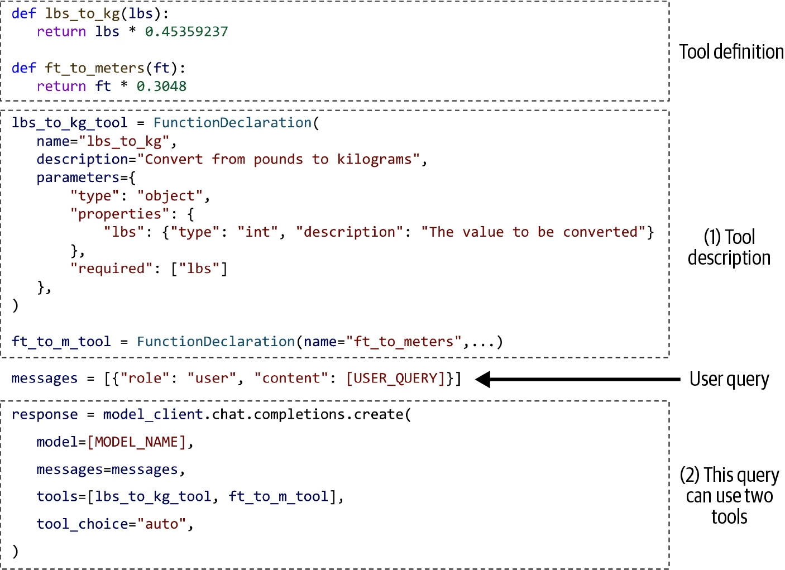
给定查询，按图 6-10 定义的智能体会自动生成要用的工具及参数。一些函数调用 API 会保证只生成有效函数，却无法保证参数值正确。
例如用户问“How many kilograms are 40 pounds?”（40 磅是多少千克？），智能体可能决定调用 lbs_to_kg_tool，参数值为 40。回答可能如下：
response = ModelResponse(
finish_reason='tool_calls',
message=chat.Message(
content=None,
role='assistant',
tool_calls=[
ToolCall(
function=Function(
arguments='{"lbs":40}',
name='lbs_to_kg'),
type='function')
])
)
从这个回答中，系统可以调用 lbs_to_kg(lbs=40)，再用函数输出为用户生成回答。
使用智能体时，始终要求系统报告每次函数调用使用的参数值，并检查这些值是否正确。
规划粒度
Planning Granularity
计划是列出完成任务所需步骤的路线图，而路线图可以有不同粒度。规划一年时，按季度的计划比按月计划层次更高，按月计划又比按周计划层次更高。
规划与执行之间存在取舍：详细计划更难生成、却更容易执行；高层计划更容易生成、却更难执行。规避这种取舍的一种方法是分层规划：先用规划器生成按季度的高层计划，再针对每个季度，用同一个或另一个规划器生成按月计划。
到目前为止，所有计划示例都使用精确函数名，粒度很细。问题是智能体工具清单会随时间变化，例如获取当前日期的 get_time() 可能改名为 get_current_time()。工具一变，就要更新提示和所有示例。
精确函数名也让规划器难以在工具 API 不同的多个用例中复用。如果之前用旧工具清单微调过模型生成计划，换清单以后还得重新微调。
为避免这个问题，可以用比领域函数名层次更高的自然语言生成计划。例如查询“What’s the price of the best-selling product last week”，智能体可输出：
- 取得当前日期；
- 检索上周最畅销商品；
- 检索商品信息；
- 生成查询；
- 生成回答。
自然语言让计划生成器更能抵抗工具 API 变化。如果模型主要在自然语言上训练，它也很可能更善于理解、生成自然语言计划，并且更不容易产生幻觉。
缺点是需要一个翻译器，把每个自然语言动作翻译成可执行命令。不过翻译比规划简单得多，可以交给较弱模型，幻觉风险也较低。
复杂计划
Complex Plans
到目前为止，计划示例都是顺序执行：上一个动作完成后才执行下一个。动作的执行顺序叫控制流；顺序只是其中一种，其他还有并行、if 语句和 for 循环：
- 顺序（Sequential）
- 任务 A 完成后执行 B，通常因为 B 依赖 A。例如自然语言输入必须先翻译成 SQL，之后才能执行查询。
- 并行（Parallel）
- 同时执行 A 和 B。例如查询“找出 100 美元以下的畅销商品”，智能体可以先取前 100 个畅销商品，再并行检索每件商品价格。
- If 语句
- 根据上一步输出执行 B 或 C。例如智能体先检查 NVIDIA 财报，再根据报告决定买入还是卖出 NVIDIA 股票。
- For 循环
- 重复执行 A，直到满足特定条件。例如持续生成随机数，直到出现质数。
图 6-11 展示这些控制流。
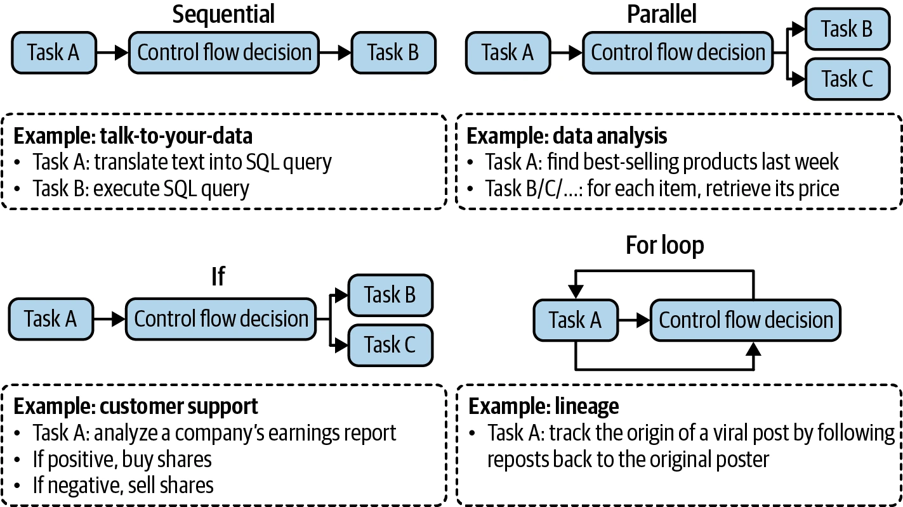
传统软件工程中，控制流条件是精确的；AI 智能体则由 AI 模型决定控制流。非顺序控制流计划无论生成还是翻译成可执行命令，都更加困难。
评估智能体框架时，要检查它支持哪些控制流。例如系统需要浏览 10 个网站时，能否同时进行？并行执行能显著降低用户感知延迟。
反思与纠错
Reflection and Error Correction
即使最好的计划也需要持续评估、调整，以最大化成功概率。智能体运作并不严格依赖反思，但要成功则需要反思。
在任务流程的很多位置，反思都很有用：
- 收到用户查询后，评估请求是否可行；
- 生成初始计划后，评估计划是否合理；
- 每个执行步骤后，评估是否仍在正确轨道；
- 完整计划执行后，判断任务是否完成。
反思与纠错是两个不同却相辅相成的机制：反思产生洞见，揭示需要纠正的错误。
反思可以由同一个智能体通过自我批判提示完成，也可以交给单独组件，例如专门评分器——为每个结果输出具体分数的模型。
ReAct（Yao 等，2022）最先提出交错进行推理与行动，如今已成为常见智能体模式。Yao 等人用“推理”同时包含规划与反思。每一步都要求智能体解释想法——规划——采取行动，再分析观察结果——反思——直到智能体认为任务结束。
通常用示例提示智能体按下面格式输出：
Thought 1: …
Act 1: …
Observation 1: …
… [继续，直到反思判定任务完成]
Thought N: …
Act N: Finish [对查询的回答]图 6-12 是遵循 ReAct 框架的智能体回答 HotpotQA（Yang 等，2018）问题的例子。HotpotQA 是多跳问答基准。
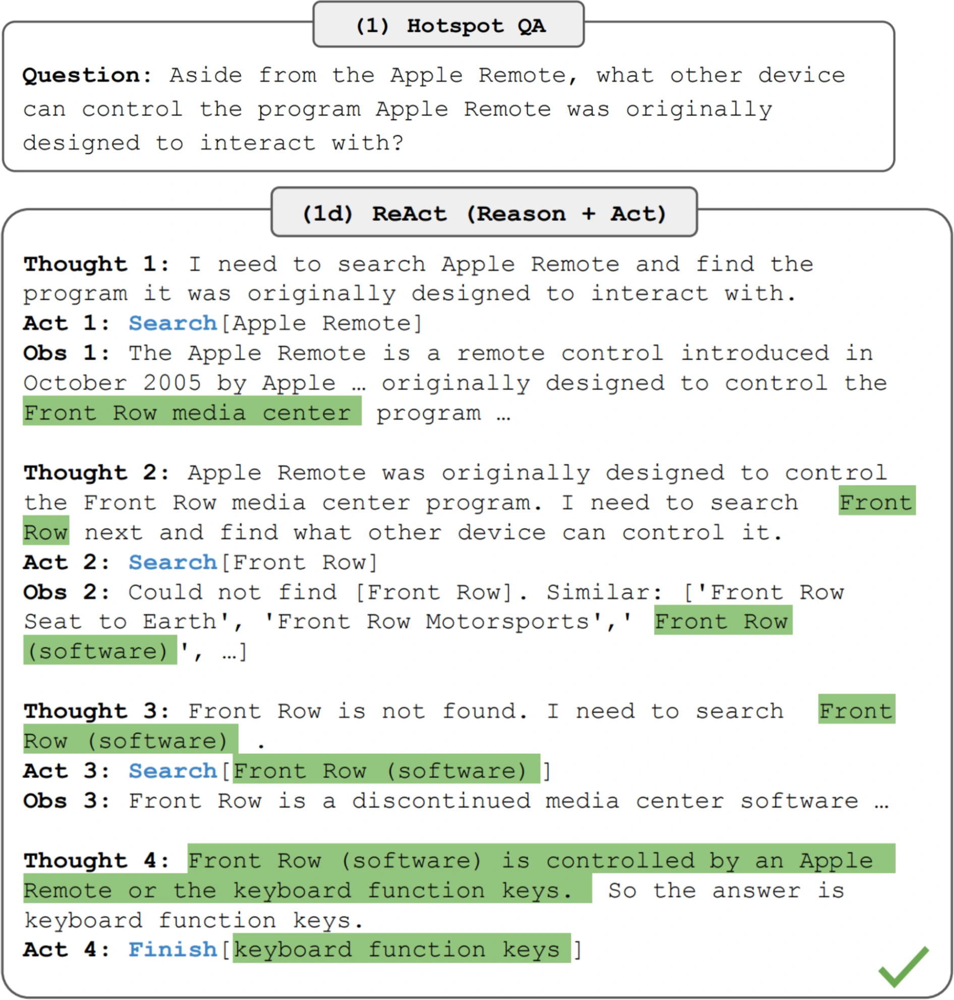
反思可以在多智能体设置中实现：一个智能体规划、行动，另一个智能体在每一步或若干步以后评估结果。
如果回答未完成任务，可以提示智能体反思失败原因和改进方式，再据此生成新计划，让智能体从错误中学习。例如在代码生成任务中，评估器发现生成代码有三分之一测试失败；智能体反思后发现没有考虑“数组中所有数字均为负数”的情况，执行者随后生成新代码，加入全负数组处理。
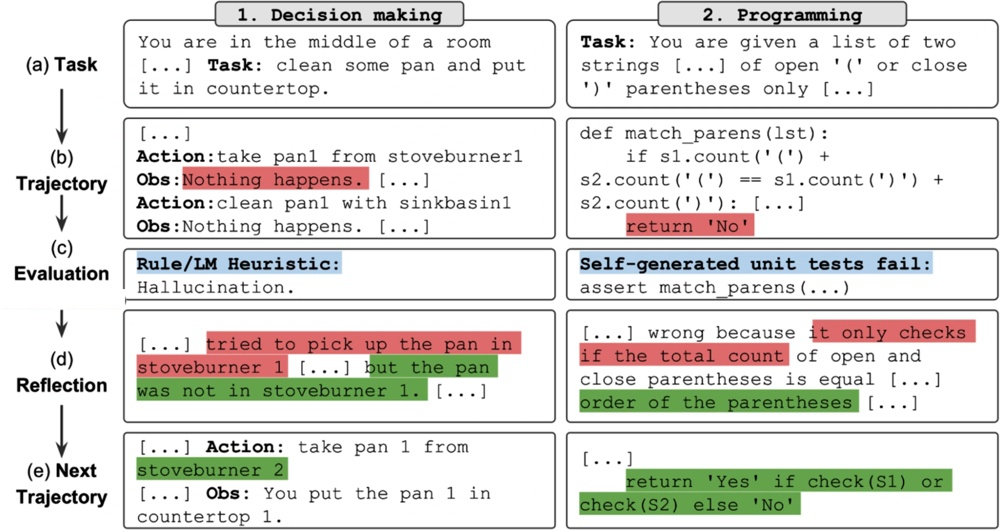
Reflexion（Shinn 等，2023）采用的正是这种方法。框架把反思拆成两个模块：评估结果的评估器，以及分析哪里出错的自我反思模块。图 6-13 展示 Reflexion 智能体。作者把计划称为“轨迹（trajectory）”；每一步评估和自我反思后，智能体都会提出新轨迹。
与计划生成相比，反思相对容易实现，却能带来出人意料的表现提升。缺点是延迟和成本。思想、观察，有时还有动作，会消耗大量生成词元；中间步骤多的任务尤其会增加成本和用户感知延迟。为让智能体遵循格式，ReAct 和 Reflexion 作者都在提示中加入大量示例，这又增加输入词元计算成本，并压缩其他信息可用的上下文空间。
工具选择
Tool Selection
工具往往对任务成功至关重要，因此必须慎重选择。给智能体哪些工具，取决于环境和任务，也取决于驱动智能体的 AI 模型。
目前没有选出最佳工具集合的万无一失指南，智能体文献中的工具清单差异很大。Toolformer（Schick 等，2023）微调 GPT-J 学习 5 种工具；Chameleon（Lu 等，2023）使用 13 种；Gorilla（Patil 等，2023）则尝试提示智能体从 1,645 个 API 中选出正确调用。
工具越多，能力越强；但越难高效使用，就像人类更难精通大量工具。增加工具还意味着增加工具说明，而说明可能放不进模型上下文。
与许多 AI 应用决策一样，工具选择需要实验和分析：
- 比较智能体在不同工具组合下的表现；
- 做消融研究，查看移除某工具后表现下降多少；不下降就删掉该工具；
- 找出智能体经常出错的工具。如果一个工具难到大量提示甚至微调都学不会，就修改工具；
- 绘制工具调用分布，查看哪些工具最常用、哪些最少用。图 6-14 展示 Chameleon 中 GPT-4 与 ChatGPT 的工具使用模式差异。
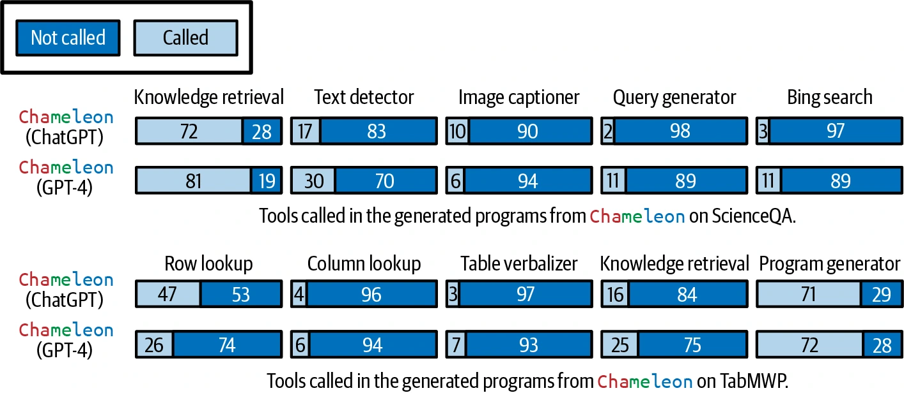
Lu 等（2023）的实验还说明两点：
- 不同任务需要不同工具。科学问答任务 ScienceQA 比表格数学任务 TabMWP 更依赖知识检索工具。
- 不同模型有不同工具偏好。例如 GPT-4 似乎会选择范围更广的工具；ChatGPT 偏好图像说明，GPT-4 则偏好知识检索。
评估智能体框架时，要评估它支持哪些规划器和工具。不同框架可能侧重不同工具类别：AutoGPT 聚焦社交媒体 API（Reddit、X、Wikipedia），Composio 聚焦企业 API（Google Apps、GitHub、Slack）。
需求很可能随时间改变，也要评估给智能体加入新工具是否容易。
人类不仅通过使用已有工具提高生产率，也会从简单工具不断创造更强工具。AI 能否从初始工具创造新工具？
Chameleon（Lu 等，2023）提出研究工具转移（tool transition）：使用工具 X 后，智能体有多大概率调用 Y？图 6-15 给出示例。若两个工具经常一起使用，可以合成一个更大的工具；智能体若知道这些信息，就能自行组合初始工具，不断构建复杂工具。
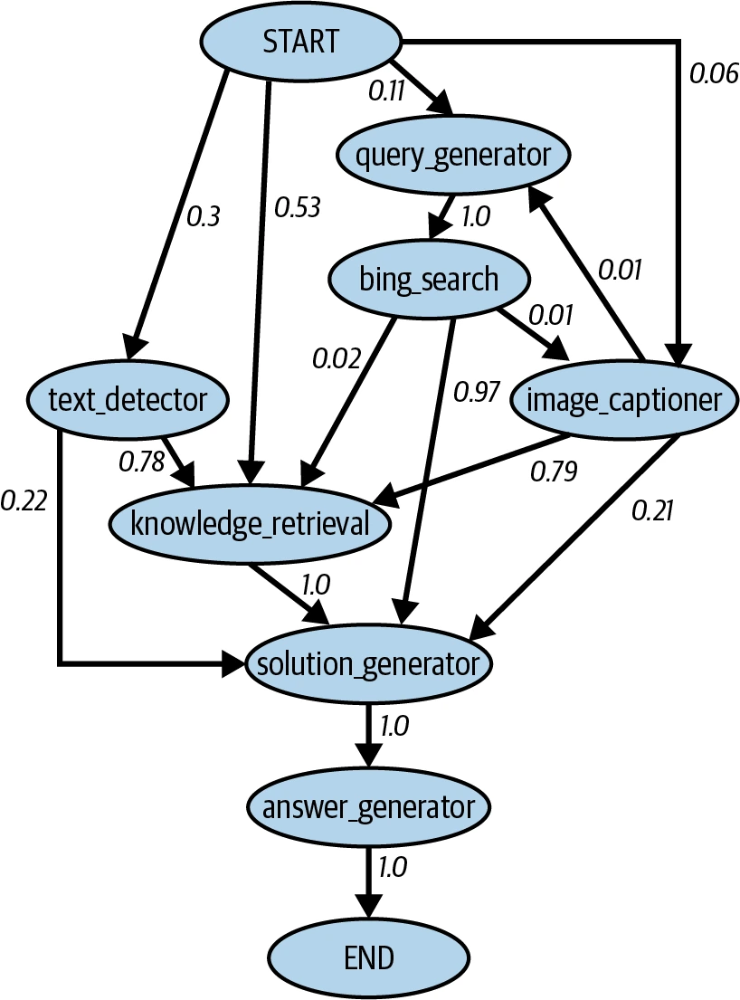
Voyager（Wang 等，2023）提出技能管理器，追踪智能体新学会的技能——工具——以便以后复用。每项技能都是一个代码程序。当管理器判定新技能有用——例如成功帮助智能体完成任务——就把它加入技能库，概念上类似工具清单，以后可检索并用于其他任务。
本节前面提到，智能体在环境中能否成功，取决于工具清单和规划能力；任何一方面失败都会导致整个智能体失败。下一节讨论不同失败模式及其评测。
智能体失败模式与评测
Agent Failure Modes and Evaluation
评测的目的就是发现失败。智能体执行的任务越复杂，潜在失败点越多。除了第 3、4 章讨论的所有 AI 应用共有失败模式，智能体还有由规划、工具执行和效率造成的独有失败；其中一些比另一些更容易发现。
评估智能体时，要识别失败模式，并衡量每种模式发生的频率。
作者创建了一个简单基准来说明这些失败模式，可在本书 GitHub 仓库查看。其他智能体基准和排行榜包括 Berkeley Function Calling Leaderboard、AgentOps 评测工具和 TravelPlanner 基准。
规划失败
Planning Failures
规划很难，失败方式很多。最常见的是工具使用失败，生成的计划可能有以下错误：
- 工具无效
- 例如计划中包含
bing_search，但它不在智能体工具清单里。 - 工具有效，参数无效
- 例如用两个参数调用
lbs_to_kg；工具虽然存在，却只接受一个lbs参数。 - 工具有效，参数值错误
- 例如用一个
lbs参数调用lbs_to_kg，但本应使用 120，却用了 100。
另一类规划失败是目标失败：智能体没有达到目标。可能因为计划根本不能解决任务，或虽然解决任务，却违反约束。比如要求规划一次预算 5,000 美元、从旧金山到河内的两周旅行，智能体却规划成去胡志明市，或者虽去河内，预算却大幅超标。
时间是一项经常被智能体评测忽视的约束。很多情况下完成时间没那么重要，因为把任务交给智能体后，只需完成时回来检查；但也有很多任务会随时间失去价值。例如让智能体准备资助申请，结果在申请截止后才完成，它就没有多大用。
一种有趣的规划失败来自反思错误：智能体坚信自己已经完成任务，实际上没有。例如要求把 50 个人分配到 30 间酒店客房，智能体只安排了 40 人，却坚持任务已完成。
评估规划失败的一种方式，是建立规划数据集，每个样本是“任务—工具清单”二元组。对每项任务，让智能体生成 K 份计划，再计算：
- 全部生成计划中，有多少有效？
- 对一项任务，智能体平均要生成多少份计划，才能得到有效计划？
- 全部工具调用中，有多少有效？
- 调用无效工具的频率是多少？
- 调用有效工具却使用无效参数的频率是多少？
- 调用有效工具却使用错误参数值的频率是多少？
分析智能体输出中的模式：哪些任务类型失败更多，原因假设是什么？模型经常在哪些工具上出错？有些工具可能对智能体太难。可以用更好的提示、更多示例或微调提高能力；都无效时，应考虑换成更容易使用的工具。
工具失败
Tool Failures
工具失败指工具选对了，输出却错了。一种情况是工具本身给出错误结果，例如图像说明器返回错误描述，或 SQL 查询生成器返回错误 SQL。
如果智能体只生成高层计划，再由翻译模块把计划动作转换成可执行命令，翻译错误也会导致失败。
智能体没有任务所需的正确工具，同样会产生工具失败。明显例子是任务要求从互联网取当前股价，但智能体不能访问互联网。
工具失败因工具而异，每个工具都需要独立测试。始终打印每次工具调用及其输出，以便检查、评估。若有翻译器，也要创建基准评估它。
发现“缺失工具”失败，需要先理解任务应该用什么工具。如果智能体经常在某个领域失败，可能缺少该领域工具；应与人类领域专家合作，观察他们会使用什么工具。
效率
Efficiency
智能体也许用正确工具生成了能完成任务的有效计划，却可能很低效。评估效率时可以追踪：
- 完成一项任务平均需要多少步？
- 完成一项任务平均成本是多少？
- 每个动作通常耗时多久？是否有特别耗时或昂贵的动作？
可以把这些指标与基线比较，基线可以是另一个智能体或人类操作员。比较 AI 与人类智能体时，要记住两者运作方式差异很大：对人高效的方式，对 AI 可能低效，反之亦然。
例如访问 100 个网页，对一次只能看一个页面的人类智能体很低效，对可以同时访问全部网页的 AI 智能体却轻而易举。
本章已经详细讨论 RAG 和智能体系统怎样工作。两种模式都经常处理超过模型上下文限制的信息。用记忆系统辅助模型上下文处理信息，能显著增强能力。下面来看记忆系统怎样工作。
记忆
Memory
记忆指让模型保留并使用信息的机制。记忆系统对 RAG 等知识密集型应用，以及智能体等多步骤应用尤其有用。RAG 依赖记忆保存增强上下文，随着多轮检索到更多信息，上下文还会增长。智能体需要记忆存储指令、示例、上下文、工具清单、计划、工具输出、反思等。RAG 与智能体虽然对记忆要求更高，任何需要保留信息的 AI 应用都能从中受益。
AI 模型通常有三种主要记忆机制：
内部知识
Internal Knowledge
模型本身就是记忆机制，保留训练数据中的知识，这些是它的内部知识。除非更新模型本身，内部知识不会改变；模型可以在所有查询中访问它。
短期记忆
Short-Term Memory
模型上下文也是记忆机制。可以把对话中的历史消息加入上下文，让模型利用它们生成未来回答。上下文不会跨任务——查询——持久保存，所以可视为短期记忆。它访问快，但容量有限，通常用来存储对当前任务最重要的信息。
长期记忆
Long-Term Memory
RAG 系统中模型能通过检索访问的外部数据源，也是一种记忆机制。它可以跨任务持久保存，因此可视为长期记忆。与内部知识不同，长期记忆中的信息可以在不更新模型的情况下删除。
人类也有类似机制。怎样呼吸是内部知识，除非出现严重问题，一般不会忘记。短期记忆存放当前所做事情直接相关的信息，例如刚认识的人的名字。长期记忆则由书籍、计算机、笔记等扩充。
为数据选择哪种机制，取决于使用频率。所有任务都必不可少的信息，应通过训练或微调纳入内部知识；很少需要的信息放在长期记忆；短期记忆留给当前上下文专用的信息。图 6-16 展示三种记忆。
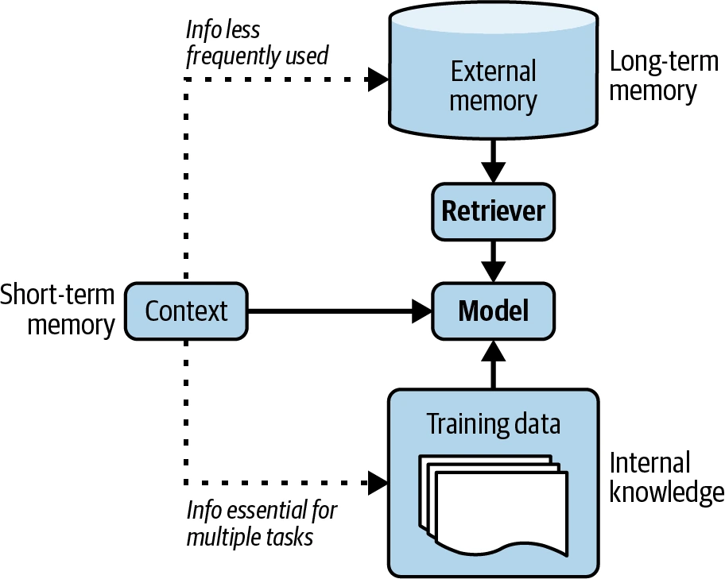
记忆对人类运作不可或缺。随着 AI 应用发展，开发者很快发现记忆对 AI 模型同样重要。人们已经开发出许多 AI 记忆管理工具，许多模型提供商也纳入了外部记忆。
给 AI 模型增加记忆系统有许多好处，包括：
- 管理单次会话中的信息溢出
- 智能体执行任务时会获得大量新信息，可能超过最大上下文长度。溢出信息可以存入带有长期记忆的记忆系统。
- 在不同会话间持久保存信息
- 如果每次寻求 AI 教练建议都要重新讲一遍完整人生故事，AI 教练几乎没有用；AI 助手不断忘记偏好，也很烦人。访问对话历史，能让智能体为你个性化行动。例如请求推荐图书时，模型若记得你喜欢《三体》，就能推荐类似作品。
- 提高模型一致性
- 如果同一个主观问题问作者两次，例如给笑话打 1～5 分，只要作者记得上次答案，两次就更可能一致。同样，AI 模型若能参考过去回答，就能校准未来回答，保持一致。
- 维护数据结构完整性
- 文本天然非结构化，所以文本模型上下文中保存的数据也是非结构化的。可以把结构化数据放入上下文，例如逐行输入一张表，但无法保证模型理解它本应是表格。能够存储结构化数据的记忆系统，有助于保留数据结构。例如让智能体寻找潜在销售线索时，它可以用 Excel 表保存线索；也可用队列保存待执行动作的顺序。
AI 模型记忆系统通常有两个功能：
- 记忆管理：管理什么信息应存入短期和长期记忆；
- 记忆检索：从长期记忆中取回与任务相关的信息。
长期记忆是外部数据源，所以记忆检索与 RAG 检索相似。本节聚焦记忆管理。
记忆管理一般包括两种操作：添加和删除。若记忆存储不受限制，可以不删除；长期记忆也许能这样做，因为外部存储较便宜、容易扩展。但短期记忆受模型最大上下文长度限制，必须决定添加什么、删除什么。
长期记忆可以保存短期记忆溢出的内容。怎样操作取决于为短期记忆分配多少空间。给定查询，输入模型的上下文同时含有短期记忆和从长期记忆取回的信息；因此，短期记忆容量取决于要给长期检索信息留多少上下文空间。例如预留 30%，短期记忆最多只能用上下文限制的 70%；达到阈值后，溢出内容便可移到长期记忆。
与本章讨论的许多组件一样，记忆管理并非 AI 应用独有。它一直是所有数据系统的基石，人们已经开发出许多高效使用记忆的策略。
最简单的是 FIFO（first in, first out，先进先出）：最早加入短期记忆的信息最先移到外部存储。对话变长后，OpenAI 等 API 提供商可能开始删除对话开头；LangChain 等框架则可能只保留最近 N 条消息或最近 N 个词元。
长对话中，这种策略假定早期消息与当前讨论更不相关；但这个假设可能极其错误。有些对话最早的消息信息量最大，尤其当开头说明了对话目的时。FIFO 虽容易实现，却可能让模型忘记重要信息。
更复杂的策略会删除冗余。人类语言含有冗余，用来提高清晰度、弥补潜在误解；如果能自动发现冗余，记忆占用会显著降低。
一种去冗余方法是使用对话摘要，可以由同一个或另一个模型生成。摘要再加命名实体追踪，已经能解决很多问题。Bae 等（2022）更进一步：得到摘要后，再把原记忆与摘要遗漏的关键信息合并，构造新记忆。作者开发了一个分类器，对记忆中的每个句子和摘要中的每个句子，判断只加入其中一个、两者都加入，还是两者都不加入新记忆。
Liu 等（2023）则采用反思方法。每次行动后，要求智能体：
- 反思刚刚生成的信息；
- 判断新信息应该插入记忆、与现有记忆合并，还是替换其他信息——尤其当旧信息已经过时、与新信息冲突时。
遇到互相矛盾的信息，有人选择保留较新的，有人让 AI 模型判断保留哪一条。怎样处理取决于用例。矛盾可能让智能体困惑，也可能帮助它吸收不同视角。
总结
Summary
RAG 十分流行，智能体潜力巨大，早期读者因此说这是他们最期待的一章。
本章从两种模式中较早出现的 RAG 开始。许多任务需要大量背景知识，经常超出模型上下文窗口。例如编程副驾可能需要访问整个代码库，研究助手可能要分析多本书。
RAG 最初是为了克服模型上下文限制，后来也让信息使用更高效，在改善回答质量的同时降低成本。基础模型早期，人们就看出 RAG 对大量应用会非常有价值；此后无论消费者还是企业用例，都迅速采用了它。
RAG 分两步：先从外部记忆检索相关信息，再使用这些信息生成更准确的回答。系统成功取决于检索器质量。Elasticsearch、BM25 等词项检索器实现轻量，可以提供强基线；嵌入检索器计算量更大，却有潜力胜过词项算法。
嵌入检索由向量搜索驱动，而向量搜索也是搜索、推荐系统等互联网核心应用的骨干；为这些应用开发的许多向量搜索算法都能用于 RAG。
RAG 可以看成智能体的特殊情况，检索器就是模型可用的工具。两种模式都让模型绕过上下文限制并保持更新，但智能体能做得更多。
智能体由环境和可访问工具定义。在 AI 智能体中，AI 是规划器，分析任务、考虑不同方案并选择最有希望的一种。复杂任务可能需要很多步骤，因此需要强模型规划；模型的规划能力又可用反思增强，并用记忆系统帮助追踪进度。
工具越多，模型能力越多，也就能解决更困难的任务；但智能体越自动化，失败就可能越灾难性。工具使用让智能体暴露在第 5 章讨论的多种安全风险下。要让智能体在现实世界工作，必须部署严格的防御机制。
RAG 与智能体都要处理大量信息，经常超过底层模型最大上下文长度，因此需要记忆系统管理、使用模型拥有的全部信息。本章最后简要介绍了这一组件。
RAG 与智能体都属于基于提示的方法：只通过输入影响模型质量，不修改模型自身。它们能带来许多精彩应用，而修改底层模型还能开启更多可能；下一章将讨论怎样做到。
章末注释
Notes
- 原系统使用的模型是一种名为 LSTM（Long Short-Term Memory，长短期记忆）的循环神经网络。Transformer 架构在 2018 年接管以前，LSTM 一直是自然语言处理（NLP）深度学习的主导架构。
- 大约同一时期，另一篇同样来自 Facebook 的论文“How Context Affects Language Models’ Factual Predictions”（Petroni 等，arXiv，2020 年 5 月）表明，给预训练语言模型增加检索系统，可以大幅改善事实问题表现。
- 感谢 Chetan Tekur 提供这个例子。
- Parkinson 定律通常表述为：“工作会不断扩张，直到占满完成它所能得到的全部时间。”作者有一个类似理论：应用上下文会不断扩张，直到占满所用模型支持的上下文限制。
- 信息检索早在 20 世纪 20 年代就已出现：Emanuel Goldberg 的专利描述了一种“统计机器”，用于搜索胶片上存储的文档。参见 Sanderson 与 Croft 的“The History of Information Retrieval Research”（Proceedings of the IEEE，100: Special Centennial Issue，2012 年 4 月）。
- 想进一步了解 BM25，可阅读 BM25 作者的“The Probabilistic Relevance Framework: BM25 and Beyond”（Robertson 与 Zaragoza，Foundations and Trends in Information Retrieval 3 No. 4，2009）。
- Perplexity CEO Aravind Srinivas 曾发帖说：“真正改进 BM25 或全文搜索很难。”
- RAG 检索工作流与传统推荐系统有很多相似步骤。
- 一些团队告诉作者，当数据按问答格式组织时，他们的检索系统效果最好。
- 《Artificial Intelligence: A Modern Approach》（1995）把智能体定义为：任何可以被视为通过传感器感知环境、通过执行器作用于环境的事物。
- 智能体早期常被抱怨：它们唯一擅长的事就是烧光你的 API 额度。
- 大多数智能体工作流足够复杂，会涉及多个组件，所以大多数智能体都是多智能体系统。
- Chameleon（Lu 等，2023）把这个翻译器称为程序生成器（program generator）。
- 这让作者想起强化学习中的 actor-critic（AC）智能体方法（Konda 与 Tsitsiklis，1999）。
- 对人类对话，如果最早几条消息只是寒暄，情况可能恰好相反。
- 基于使用情况的策略——例如删除最不常使用的信息——更难，因为需要一种方法判断模型何时使用了某条信息。